Mina favoritresemål
Utifrån de länder jag varit i så är dessa mina top 5 resemål:
- Sydkorea
- Singapore
- Malaysia
- Thailand
- Japan
Här kommer några bilder från mina senaste resemål:


Jag heter Jennifer och är 26 år gammal. Jag studerar tre fristående kurser. Utöver denna kurs pluggar jag Initial programming in Java och Apputveckling för Android. Jag arbetar även natt på heltid på ett läkemedelsföretag i Stockholm. På min fritid umgås jag med vänner och familj, jag försöker även att resa så mycket som möjligt.
Nedan kommer en lista med alla länder jag rest till hittills:
Utifrån de länder jag varit i så är dessa mina top 5 resemål:
Här kommer några bilder från mina senaste resemål:
Här kommer tips på några av mina favorit restauranger jag besökt.
| Restaurang | Område | Land |
|---|---|---|
| Koral | Bali, Nusa Dua | Indonesien |
| Galàxia Skyfood | Madeira, Funchal | Portugal |
| Merlin's | Ubud | Indonesien |
Koral är en Restaurang omsluten av ett akvarium. Restaurangen är belägen på hotellområdet för The Apurva Kempski Bali. Koral erbjuder endast avsmakningsmenyer.
 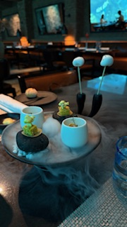
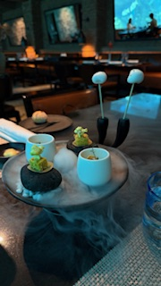
 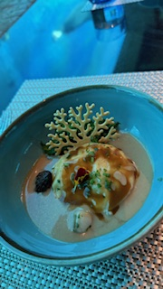
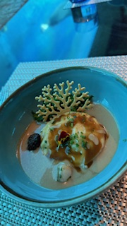


 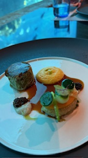
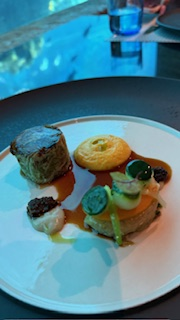
 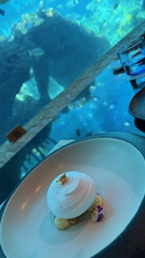
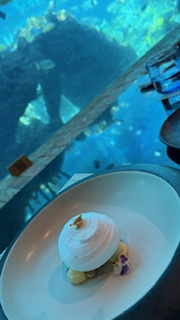
Galáxia Skyfood är en restaurang som är belägen på hotell Savoy Palace's takvåning. De erbjuder bland annat Á la carte och avsmakningsmenyer.

 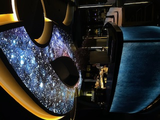
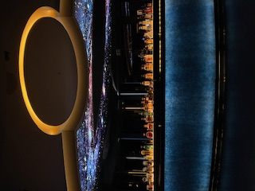
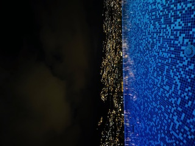
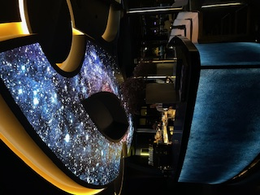
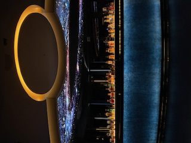
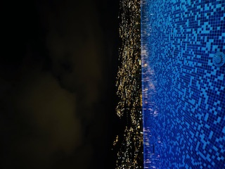

 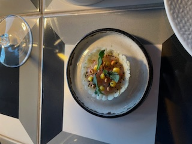
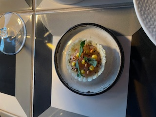

 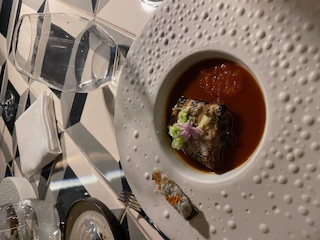
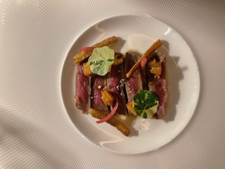
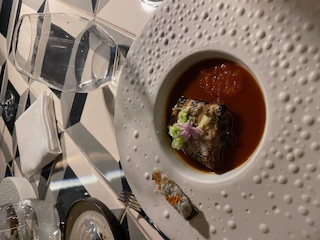
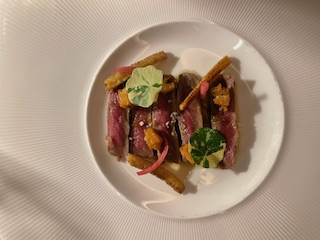
 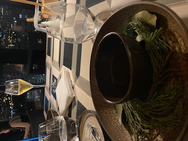
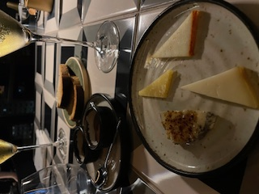
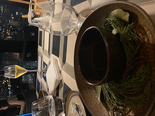
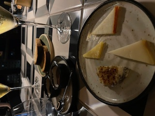
 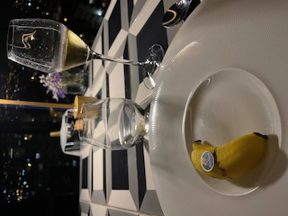
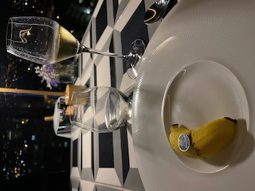

Merlin's är en restaurang med ett unikt koncept där "the food chooses you". Med hjälp av tarotkort väljs din specifika avsmakningsmeny.


 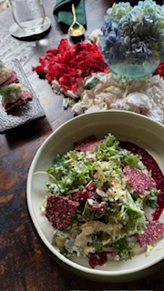
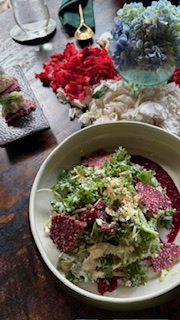


För att navigera till min analys jag gjorde i uppgift 1a klicka här